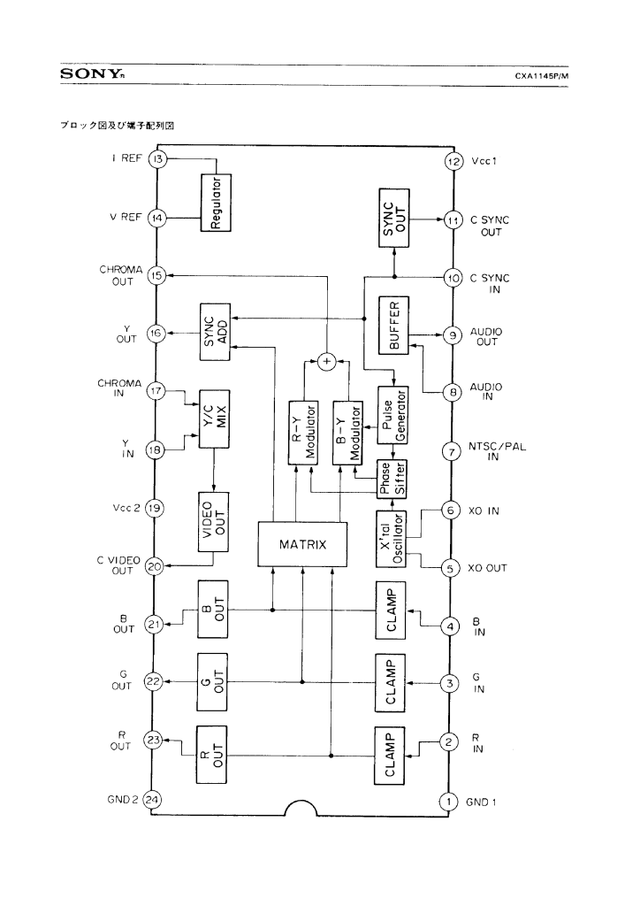
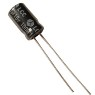
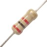
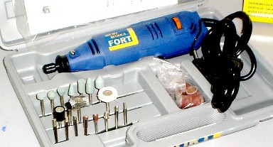

Conceitos de instalação de saída AV em video games
 :::. Por Gigacom!
:::. Por Gigacom!
É comum eu encontrar pessoas que querem saber tin-tin por
tin-tin como se instala uma saída de audio/video em um video
game antigo. A boa noticia é que essa operação
pouco difere entre os consoles, bastando apenas ter um minimo de
conhecimento sobre os componentes internos da placa do video game, e
sobre como utilizar algumas ferramentas e componentes. Logo, com
uma informação mais ou menos genérica, qualquer um
com um minimo de inteligência consegue por si próprio
instalar essas saídas em qualquer console, sem ficar preso ao
Google. Continue lendo, e descubra como!
Chip decodificador
Todo console tem um chip responsável por codificar e decodificar os sinais de video para um formato compatível com um determinado sistema de TV. Falei grego? Explico: internamente, os sinais de video enviados pelos processadores de video dos video games, vão no formato RGB, semelhante à esse que é utilizado em computadores. O chip codificador, pega esses sinais RGB e converte para um sinal compatível com a televisão. Normalmente, esses chips operam apenas com três sinais: NTSC (utilizado nos Estados Unidos), NTSC-J (Japão) e PAL (Europeu).
Os consoles fabricados no Brasil, onde o sistema de cores é PAL-M, normalmente vem com um chip codificador configurado para enviar sinais NTSC, porém esses sinais em NTSC são interceptados e convertidos para o padrão PAL-M por um circuito adicional instalado na placa mãe do console.
Outra característica interessante desses chips, é a interceptação e modificação de sinais de audio. Alguns pegam os sinais de audio estéreo e convertem para mono, outros simplesmten pegam os sinais por um lado, e enviam os mesmos sinais por outro canto. Qual a razão disso, eu ainda não sei, mas é assim que acontece...
Modelos de chips
Cada chip codificador possui uma identificação, que indica o modelo e as características que possue. Essa identificação vem impressa nos chips, e ajuda muito na hora de fazer as soldagens, pois com ela é possivel pesquisar na internet o datasheet do chip, e assim saber precisamente quais as funções de cada saída do codificador. Falei grego de novo? Ah tá... vamos lá então: quando a gente vai soldar um fio em um desses chips para criar uma saída A/V, na verdade estamos soldando fios onde os sinais de video e som, que são aceitos por TVs, saem do chip. Como é muito chato e nem sempre confiável ficar testando perninha por perninha do chip, é mais prático pegar a identificação do pretinho, jogar lá no Google, e pesquisar pelo esquema que mostra as funções e identifica as saídas do chip. Esse esquema tambem é chamado de datasheet. Nesse quadradado ao lado, é mostrado um exemplo de datasheet do CXA1145, encontrado em alguns consoles da SEGA como o Master System e Mega Drive. Clique nele para ampliar e ver melhor.Com o datasheet, fica muito mais fácil identificar os pontos onde serão feitas as soldas, evitando assim retrabalho (ou cagadas fatais...).
Uso de capacitores, resistores, simpatias...
Ainda assim, por vezes é nescessário utilizar um conjunto de componentes para adaptar os sinais de video que saem desses chips, para poderem ser exibidos corretamente na televisão. Em geral, é utilizado um sisteminha simples de dois resistores e um capacitor, em outros casos menos que isso é nescessário. O problema mesmo é que quase nunca isso dá bons resultados... a imagem costuma ficar bem ruim, e não há santo que dê jeito, ah não ser que você esteja disposto a desenbolsar uma boa grana com uma simpatizeira profissional, para pedir ajuda ao além.
De qualquer forma, esses componentes extras são os responsavéis por dar um ajuste final aos sinais de video (é, graças à Godi os sinais de audio não precisam disso), e sem eles a imagem fica péssima, ruim pra cacete. Claro, vale lembrar que é só em alguns casos que é preciso utilizar isso, nos outros a ligação dos fios com a saída de video é direta mesmo.
Furando o console
Tendo uma idéia boa de como e onde soldar os fios, a pior parte de tudo é onde colocar os conectores RCA no console. Comumente, o povo usa o ferro de solda para derreter e fazer buracos horrendos no coitado do video game. O resultado às vezes é bom, outras nem tanto, e comumente dá em merda. Para evitar espetar o ferro quente no console e acabar com o traseiro do coitado (sem malicia povo, sem malicia), recomendo fortemente utilizar aquelas brocas de miniretifica. É muito mais prático e confiável, e no final o acabamento fica profissional.

Mas é claro, nem todo mundo tem ou está disposto a gastar grana com isso só para fazer uns 3 furinhos num video game. Nesse caso, pode-se utilizar outra coisa, mas preferencialmente com a ajuda de um adulto. Quê? Tá achando que é brincadeira? Então tente sozinho furar um console com uma furadeira para ver o que acontece. Sim, uma furadeira tambem pode ser usada para fazer os furinhos no console, e deixar o acabamento quase tão bom quanto ficaria com uma miniretifica, desde que seja usada corretamente é claro. Lembre apenas de que está furando um plástico fino, e não a parede do seu quarto. A ajuda de outra pessoa é mais que nescessária, pois você irá precisar de alguém para segurar o console, enquanto as suas mãos estarão ocupadas com a operação. Na hora de ligar a furadeira, não aperte o botão dela até o fundo, aperte apenas de leve, para que ela ligue e fique em baixa rotação, assim ela irá furar o console, sem derretê-lo ou fazer você perder o controle da ferramenta.
Onde instalar os conectores RCA
Ainda há mais uma coisita a se notar na instalação dos conectores RCA. Alguns video games possuem add-ons proprios, que poderão na se encaixar no console se a saída RCA ficar no lugar onde a peça se encaixaria. Esse tipo de situação a gente encontra no Mega Drive por exemplo, onde o Master Converter ocupa uma parte da parte traseira do console. Para evitar isso, é óbvio que você deve instalar a saída RCA em outra parte.

Basicamente é isso crianças. Como diz o título, esse texto aborda apenas conceitos e não a operação toda. Para cada console há um esquema, mas não costuma ter muita diferença na instalação de um para outro. O que recomendo além de tudo isso, é calma e certeza do que se está fazendo. É preciso ter habilidade com solda, se você não tem essa pericia, então treine um bocado em aparelhos velhos antes de tentar fazer algo no seu precioso video game. Duvidas e sugestões já sabem onde ir (lá no Trombone).
Acesse o Trombone e comente sobre essa matéria!


{kind=link}

O Trombone é o forum de discurssão do site, onde você pode postar as suas duvidas, elogios ou qualquer outra coisa que queira falar. Visite agora mesmo!!!